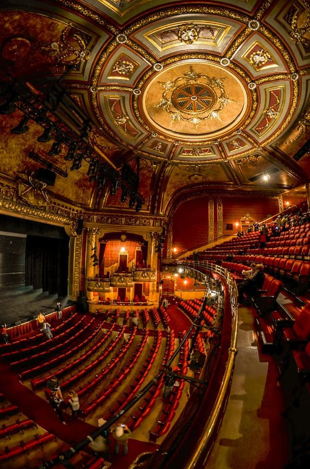

Sydney fait rêver bon nombre d'entre nous, et il y a de quoi. Bien que son Opera House et ses plages de Bondi et Manly soient les sites auxquels on pense immédiatement, il ne faut pas uniquement s'arrêter là. Sydney c'est aussi la ville (la plus grande d'Australie), où se regroupent les nationalités du monde entier faisant d'elle un univers cosmopolite que l'on retrouve dans les discussions, l'architecture des quartiers et dans vos assiettes. Prenez le temps de bien visiter Sydney qui semble être une succession de grands monuments, mais qui abrite quelques trésors naturels dans ses environs comme le parc national des Blues Mountains.
Classé au patrimoine mondial de l'Unesco, l'opéra de sydney est le symbole mondialement connu de Sydney et de l’Australie au même titre que la Tour Eiffel pour Paris et la France. Sa forme peut faire penser à un coquillage (ou des voiles, selon l’imaginaire de chacun). L’opéra de Sydney conjugue plusieurs forces qui en font un bâtiment incontournable. L’architecture de l’opéra de sydney est très audacieuse, révolutionnaire et offre des jeux de lumière impressionnant selon les heures de la journée. La toiture est recouverte de plus d’un million de tuiles en granit blanc.
Le Sydney Opera fut construit là où les aborigènes étaient retenus prisonniers (le site de Bennelong). Il se situe à la pointe d’une des péninsules de la baie de Sydney, à coté du jardin botanique, du pont Harbour et du port de Sydney. Une belle balade en perspective même si vous choisissez de ne pas le visiter. De nos jours, il est l’un des centres culturels les plus dynamique du pays grâce à des spectacles, expositions et autres manifestations. La plus grande salle de concert possède 2679 sièges, ainsi que le plus grand orgue mécanique au monde : plus de 10 000 tuyaux. L’opéra de Sydney est inscrit au patrimoine national autralien depuis 2005 et en 2007, il est reconnu comme patrimoine mondial de l’UNESCO au titre d’œuvre architecturale majeure du XXème siècle.